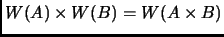
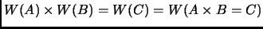

One of the key points for wavelet matrix multiplication is the proof that  If this is the case, then it is obvious that . So far the proof is still weak. The reason is that an example proof is useful for proving something to not be the case, rather than being the case. However, a simple example does show some intuitive steps that would be necessary for a proof.